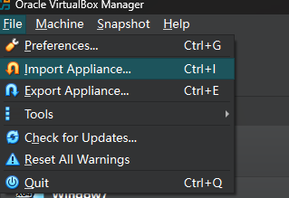
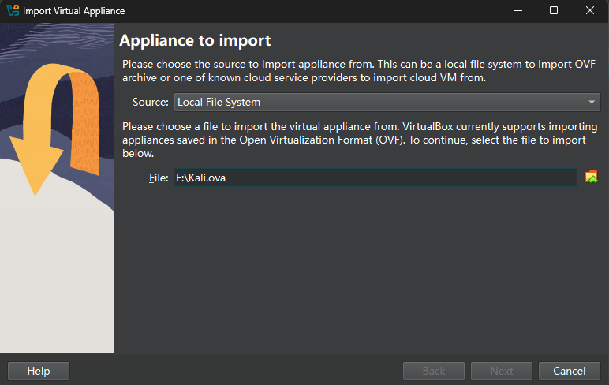
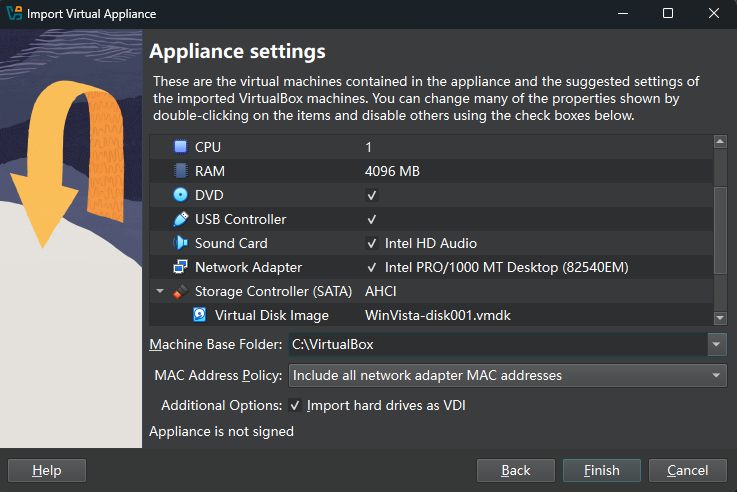
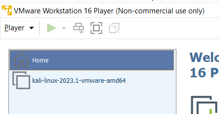
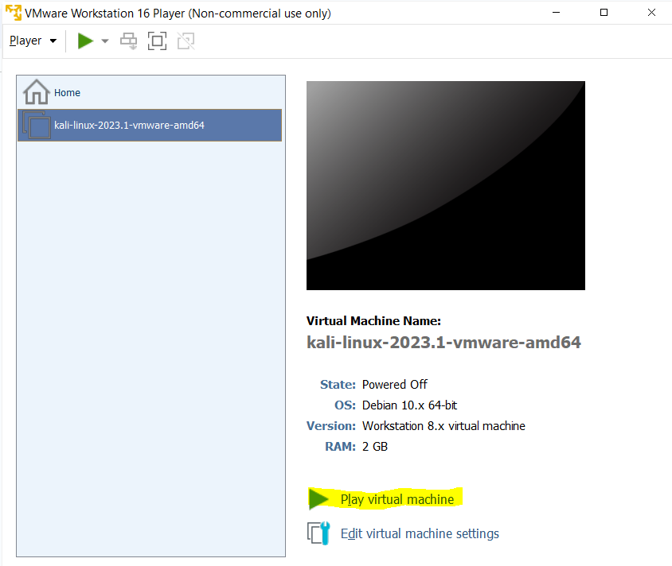
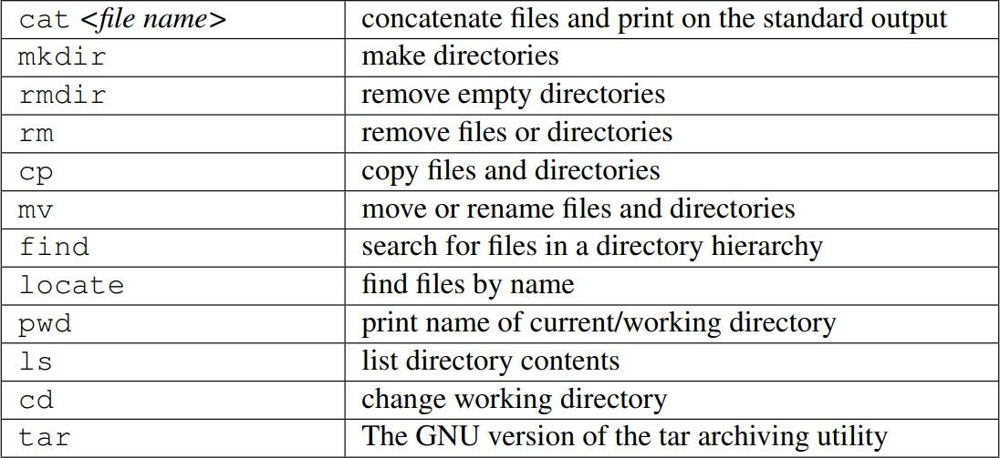
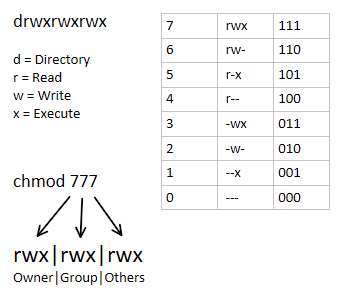
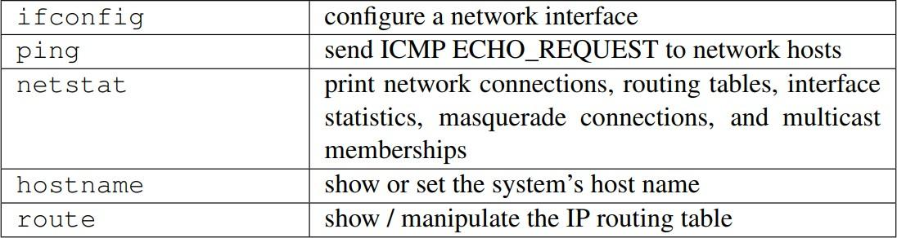

You will learn how to navigate Linux, create files, manage permissions, use administrator commands, inspect password hashes, and run basic network commands.
Working folder used in this lab: /home/kali/Lab2-GRC
Default Kali login: kali / kali
Before You Start
This lab is written for students who are new to Linux. Follow the commands in order. Do not skip a step unless the manual tells you that the step is optional.
Use the default Kali account unless your instructor gives you another account.
| Username | kali |
| Password | kali |
When Linux asks for a password in the terminal, it usually does not show letters, dots, or stars while you type. This is normal. Type the password carefully and press Enter.
Each gray command block should be typed into the terminal. Press Enter after each line. Some commands show output. Your output may be slightly different because file sizes, dates, and IP addresses can change.
1. Start Kali and Open Terminal
Option A: Kali Linux on Your Own Laptop or PC
Use this option if your instructor gave you a Kali .ova file.
Open VirtualBox.
Go to File > Import Appliance.

Select the Kali .ova file.

.ova file in the import dialog.Keep the default import settings unless your instructor says otherwise.
Click Finish.

Start the Kali Linux virtual machine.
Log in with username kali and password kali.
Option B: Kali Linux on a Lab PC
Use this option if the lab computer already has Kali prepared.
Open VMware Workstation 16 Player.

Click Open a Virtual Machine.
Navigate to the Kali virtual machine folder given by your instructor.
Select the Kali .vmx file.
Click Play virtual machine.

Log in with username kali and password kali.
Open Terminal
Click the terminal icon on the top panel, or open the application menu and search for Terminal.
If the text is too small, use the shortcuts below.
| Ctrl + + | Zoom in |
| Ctrl + - | Zoom out |
| Ctrl + Shift + C | Copy selected text from terminal |
| Ctrl + Shift + V | Paste text into terminal |
2. Check Your Current User and Location
Run these commands first so you understand where you are working.
whoami
pwd
lswhoami should show kali. The pwd command prints your current folder.
3. Create the Lab Folder
All work in this manual uses one folder:
/home/kali/Lab2
Create it now.
cd /home/kali
mkdir -p Lab2
cd Lab2
pwdExpected output:
/home/kali/Lab2If the folder already exists, mkdir -p Lab2 will not give an error. Continue with cd Lab2.
4. Create Files and Folders
Create three empty text files and one folder named backup.
touch notes.txt summary.txt draft.txt
mkdir -p backup
ls -lWrite text into files.
echo "Linux is powerful." > notes.txt
cat notes.txt
echo "This is a test draft." > draft.txt
cat draft.txt| touch | Create an empty file |
| mkdir | Create a folder |
| ls -l | List files with details |
| echo | Print text |
| > | Write output into a file and replace old content |
| cat | Show file content |

5. Copy, Move, Rename, and Delete
Copy notes.txt into the backup folder.
cp notes.txt backup/
ls -l backupMove summary.txt into the backup folder.
mv summary.txt backup/
ls -l
ls -l backupRename the draft file.
mv draft.txt first-draft.txt
ls -lDelete the renamed draft file.
rm first-draft.txt
ls -lrm deletes files. There is usually no recycle bin for terminal deletion. Check your spelling before pressing Enter.
6. Hidden Files
In Linux, a hidden file starts with a dot.
echo "hidden content" > .hiddenfile
ls
ls -als does not show .hiddenfile. ls -a shows hidden files.
7. View and Search Text
Replace the content of notes.txt with three lines.
echo -e "This is line 1\nThis is line 2\nAnother line here" > notes.txt
cat notes.txtSearch for matching text.
grep "line" notes.txt
grep -n "line" notes.txtSearch for files.
find . -name "*.txt"
find /home/kali -type f -name "*.txt"| grep "text" file | Search inside a file |
| grep -n | Show matching line numbers |
| find . | Search from the current folder |
| *.txt | Match files ending with .txt |
8. File Permissions
Linux permissions control who can read, write, and run a file.
ls -l notes.txtExample:
-rw-r--r-- 1 owner group 42 Jun 8 10:00 notes.txt| Part | Meaning |
| - | Regular file |
| rw- | Owner can read and write |
| r-- | Group can read |
| r-- | Others can read |
| owner group | File owner and group. On a fresh Kali VM this is usually kali kali, but it may differ if the file already existed. |

Make the file private to the owner.
chmod 600 notes.txt
ls -l notes.txtExpected permission pattern:
-rw------- 1 owner group ...Allow the owner and group to read and write.
chmod 660 notes.txt
ls -l notes.txtExpected permission pattern:
-rw-rw---- 1 owner group ...9. Create and Run a Script
Create a simple shell script.
echo -e '#!/bin/bash\necho Hello from Lab2' > hello.sh
cat hello.shTry to run it.
./hello.shIf permission is denied, add execute permission and run it again.
chmod +x hello.sh
./hello.shExpected output:
Hello from Lab2If you see Permission denied, the file probably does not have execute permission. Run chmod +x hello.sh.
10. Redirection and Pipes
Use a pipe to send output from one command into another command.
cat notes.txt | grep "Another"Save the result into a new file.
cat notes.txt | grep "Another" > result.txt
cat result.txtAppend a line without deleting the existing content.
echo "Appending a line" >> notes.txt
cat notes.txt| > | Save output to a file and overwrite existing content |
| >> | Save output to the end of a file |
| | | Send output from the left command into the right command |
11. Administrator Commands with sudo
Some commands need administrator permission. In Kali, use sudo.
whoami
sudo whoamiExpected output:
kali
rootroot is the administrator account in Linux. Administrator commands can change system settings, install software, create users, and read protected files.
If sudo asks for a password, type the password for kali. Nothing appears while typing. Press Enter after the password.
12. Users and Groups
Create a group for this lab.
sudo groupadd -f Lab2group
getent group Lab2groupCreate a new user named sierra.
sudo adduser sierra
id sierraWhen adduser asks for a new UNIX password, type sierra. This keeps the later password-hash exercise consistent. Press Enter to skip optional personal information fields. Type Y when asked to confirm.
If the user already exists, continue to the next command. To reset the password for this lab, use sudo passwd sierra and set it to sierra.
Add sierra and kali to the lab group.
sudo usermod -aG Lab2group sierra
sudo usermod -aG Lab2group kali
id sierra
id kaliChange the group owner of notes.txt.
cd /home/kali/Lab2
sudo chown kali:Lab2group notes.txt
chmod 660 notes.txt
ls -l notes.txtExpected permission pattern:
-rw-rw---- 1 kali Lab2group ...Practice switching user accounts.
su sierra
whoami
exit
whoamiAfter su sierra, whoami should show sierra. After exit, whoami should show kali.
If su sierra asks for a password, use the password created for sierra. If you forgot it, return to kali and run sudo passwd sierra.
13. Protected System Files and Password Hashes
This section is for controlled classroom practice only. Do not access password files or password hashes on systems where you do not have permission.
Try to read the protected password hash file without sudo.
cat /etc/shadowYou should see a permission error. Now use sudo.
sudo head -n 5 /etc/shadow/etc/shadow stores password hash information. Normal users cannot read it. The administrator can read it with sudo.
Show only the entry for sierra.
sudo grep "sierra" /etc/shadowExample format:
sierra:$y$j9T$saltvalue$hashvalue:18875:0:99999:7:::| Field | Meaning |
| sierra | Username |
| saltvalue | Random salt used when hashing |
| hashvalue | Stored password hash |
| 18875 | Last password change date, counted in days since 1 January 1970 |
| 0 | Minimum days before password can be changed again |
| 99999 | Maximum password age |
| 7 | Warning days before password expires |
14. Verify a Password Hash with Python
The Python script uses mkpasswd. Check that it is installed before creating the script.
command -v mkpasswdIf no path is shown, install the package that provides mkpasswd.
sudo apt update
sudo apt install whoisCreate the Python file with nano.
nano verify_hash.pyType the readable code below manually. Do not copy Python code from the PDF because some PDF readers remove spaces.
import subprocess
stored_hash = (
"$y$j9T$9foj1f1XZcfMVdg/zfA55."
"$bYRa9O7OKwdBf2GXPMZZWL9anvdgTUdu"
"AVXdW.A00gA"
)
hash_setting = "$y$j9T$9foj1f1XZcfMVdg/zfA55."
password_guess = input("Enter password to check: ")
result = subprocess.run(
["mkpasswd", "-m", "yescrypt", password_guess, hash_setting],
capture_output=True,
text=True,
check=True,
)
hashed_guess = result.stdout.strip()
message = "Password matches!" if hashed_guess == stored_hash else "Incorrect password."
print(message)Run the script.
python3 verify_hash.pyWhen prompted, enter:
sierraExpected output:
Password matches!15. Generate a SHA-512 Password Hash
Check whether mkpasswd is installed.
command -v mkpasswdIf no path is shown, install the package that provides mkpasswd.
sudo apt update
sudo apt install whoisIf apt asks Do you want to continue?, type Y. If the VM has no Internet connection, skip the install step and inform your instructor.
Generate a SHA-512 password hash.
mkpasswd --method=sha-512 --salt=abcdefghi testpasswordCreate a practice user and assign the generated hash.
sudo useradd -m yenlung
hash=$(mkpasswd --method=sha-512 --salt=abcdefghi testpassword)
sudo usermod --password "$hash" yenlung
sudo grep "yenlung" /etc/shadowThe hash=$(...) command stores the generated hash in a variable. Quoting "$hash" keeps the full hash together when it is passed to usermod. If useradd says the user already exists, continue with the usermod command.
Test the account.
When su asks for the password, type testpassword.
su - yenlung
whoami
exit16. Password Cracking Demonstration
Only test password cracking on lab accounts and lab files created in this manual.
Create a small password list.
cd /home/kali/Lab2
echo "testpassword" > password.txt
cat password.txtSave the yenlung shadow entry into a lab file.
sudo grep "yenlung" /etc/shadow > shadow.txt
ls -l shadow.txtRun John the Ripper.
john --wordlist=password.txt shadow.txtShow the cracked password.
john --show shadow.txtIf john is not found, install it with sudo apt install john. If the password is not found, confirm that password.txt contains the same password used for yenlung.
17. Network Commands

Find the System IP Address
ip aLook for an address like 192.168.x.x, 10.x.x.x, or 172.16.x.x. The address 127.0.0.1 is the loopback address for the local machine.
View the Default Route
ip routeExample:
default via 192.168.1.1 dev eth0Find the IP Address of a Domain
dig openai.comIf dig is not found, install it with sudo apt install dnsutils, or ask your instructor if package installation is not available.
List Network Devices
ip link showCheck Open Network Ports
ss -tuln| -t | TCP sockets |
| -u | UDP sockets |
| -l | Listening sockets |
| -n | Numeric output without DNS lookup |
Show Hostname and Local IP Address
hostname
hostname -I18. Clean Up
Only clean up after your screenshots and answers have been submitted.
cd /home/kali
rm -ri Lab2rm -ri Lab2 asks before deleting files. Read each question carefully. Type y only when you are sure you want to delete the lab folder.
19. Submission Checklist
Submit evidence that you completed the lab. Your instructor may ask for screenshots, copied terminal output, or a short written answer.
Current user and working folder: whoami, pwd
File and folder creation: ls -l
Copy, move, rename, and delete commands
Hidden file evidence using ls -a
Permission evidence using ls -l notes.txt
User and group evidence using id sierra and id kali
Protected file evidence using sudo grep "sierra" /etc/shadow
Python hash verification output
Network command output for ip a, ip route, and hostname -I